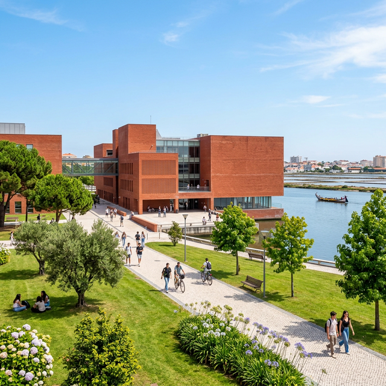

Universidade de Aveiro
O campus que constrói o futuro será o palco do BREAK The BOX em Aveiro.
Reconhecida internacionalmente pela sua excelência académica e pela sua profunda ligação à inovação e tecnologia, a Universidade de Aveiro (UA) oferece o ambiente ideal para desafiarmos mentes e quebrarmos barreiras.
O campus, caracterizado pela sua notável arquitetura e espaços verdes apelativos, é um autêntico ecossistema criativo. As instalações exatas onde decorrerão as palestras e as zonas de networking encontram-se atualmente em fase final de definição e serão anunciadas muito brevemente.
Atenção: O anfiteatro principal e as salas das sessões interativas dentro do Campus Universitário de Santiago serão divulgados em breve. Fica atento!
